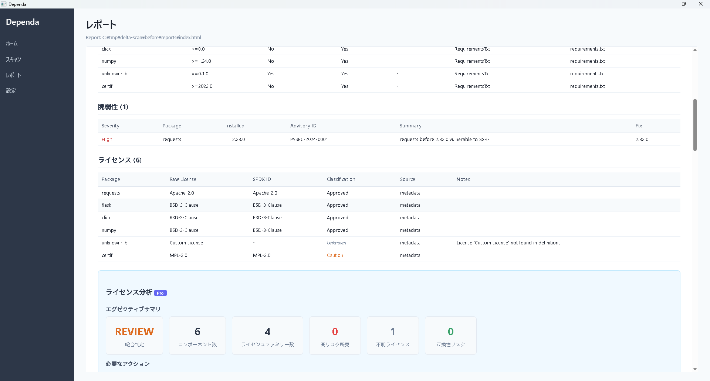
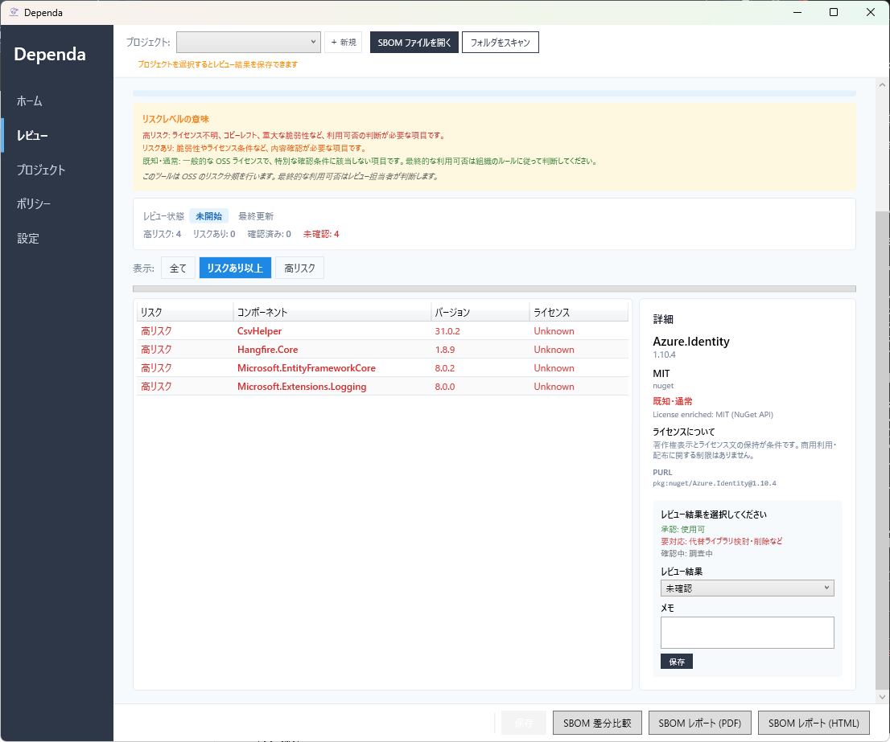
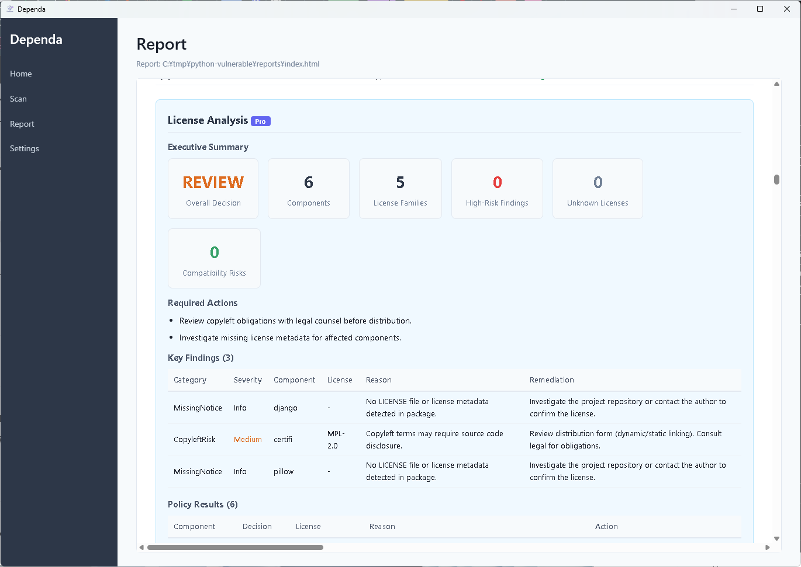

Chapter 4: ライセンス分析
ライセンスリスクを自動分類（High Risk / Risk / Known-Normal）
ライセンスとは
ソフトウェアライセンスとは、そのソフトウェアをどのように使ってよいかを定めたルール（使用許諾条件）のことです。外部のライブラリを自分のプロジェクトに組み込んで使う場合、そのライブラリのライセンス条件を守る必要があります。
たとえば、あるライセンスでは「商用利用禁止」「ソースコードの公開義務」などの制約がある場合があります。こうした条件を知らずに使うと、法的なリスクが発生する可能性があります。
Dependa は依存ライブラリのライセンスを自動的に特定し、リスクの度合いに応じて分類してくれます。
v2.0 ライセンスリスク分類
Dependa v2.0 では SPDX ID（ライセンスの国際標準識別子）をもとに、各ライセンスを以下のリスクレベルに分類します。
| リスクレベル | 意味 | 代表的なライセンス |
|---|---|---|
| High Risk | 商用利用の制限や強いコピーレフト条件があり、組み込みは推奨されません。早急な確認が必要です。 | GPL-3.0, AGPL-3.0, CC-BY-NC-4.0, SSPL-1.0 |
| Risk | 利用は可能ですが、条件（ソースコード公開義務など）に注意が必要です。 | LGPL-2.1, LGPL-3.0, MPL-2.0, EPL-2.0 |
| Known-Normal | 商用利用を含め、一般的に安全に利用できるライセンスです。 | MIT, Apache-2.0, BSD-2-Clause, BSD-3-Clause, ISC |
| Unknown | ライセンスを特定できなかったパッケージです。手動確認を推奨します。 | （ライセンス情報なし） |
分類は一般的な判断基準に基づいています。組織の法務方針によっては、異なる判断が必要な場合があります。


オンライン補完（PyPI / npm / NuGet） PRO
Pro プランでは、依存定義ファイルだけではライセンスが特定できない場合に、パッケージレジストリからライセンス情報をオンラインで補完します。
| レジストリ | 対象 |
|---|---|
| PyPI | Python パッケージ |
| npm | Node.js パッケージ |
| NuGet | .NET パッケージ |
- ローカルのファイルにライセンス情報がないパッケージに対して自動的に問い合わせます。
- Unknown の数を減らし、より正確な分析結果を得られます。
- 設定画面の「オンライン補完」を ON にすると有効になります。
ポリシー判定ルール
Dependa はライセンスリスク分類に基づき、自動的にポリシー判定を行います。
High Risk になる条件: High Risk に分類されるライセンスが 1 件でも検出された場合、そのパッケージは High Risk と判定されます。
Risk のライセンスがある場合は Risk となりますが、利用条件を確認した上での使用を推奨します。
Chapter 4: License Analysis
Automatically classify license risks (High Risk / Risk / Known-Normal)
What Are Licenses?
A software license defines the rules (terms and conditions) governing how software may be used. When you incorporate external libraries into your project, you must comply with each library's license terms.
For example, some licenses may include restrictions such as "no commercial use" or "source code disclosure required." Using libraries without being aware of these conditions can create legal risks.
Dependa automatically identifies the licenses of your dependency libraries and classifies them by risk level.
v2.0 License Risk Classification
Dependa v2.0 classifies each license into one of the following risk levels based on SPDX IDs (international standard license identifiers):
| Risk Level | Meaning | Example Licenses |
|---|---|---|
| High Risk | Has commercial use restrictions or strong copyleft conditions. Not recommended for inclusion. Immediate review required. | GPL-3.0, AGPL-3.0, CC-BY-NC-4.0, SSPL-1.0 |
| Risk | Can be used, but conditions (such as source code disclosure) require attention. | LGPL-2.1, LGPL-3.0, MPL-2.0, EPL-2.0 |
| Known-Normal | Generally safe for use, including commercial use. | MIT, Apache-2.0, BSD-2-Clause, BSD-3-Clause, ISC |
| Unknown | License could not be identified. Manual verification is recommended. | (No license information) |
Classifications are based on general criteria. Your organization's legal policies may require different assessments.


Online Enrichment (PyPI / npm / NuGet) PRO
With the Pro plan, when license information cannot be determined from dependency files alone, Dependa retrieves license data online from package registries.
| Registry | Target |
|---|---|
| PyPI | Python packages |
| npm | Node.js packages |
| NuGet | .NET packages |
- Automatically queries packages that have no license information in local files.
- Reduces the number of Unknown results for more accurate analysis.
- Enable "Online Enrichment" in the Settings screen to activate.
Policy Rules
Dependa automatically evaluates policy based on license risk classifications.
High Risk condition: If even one High Risk license is detected, the package is classified as High Risk.
If Risk licenses are present, the package is classified as Risk. However, reviewing the specific license terms before use is recommended.